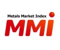
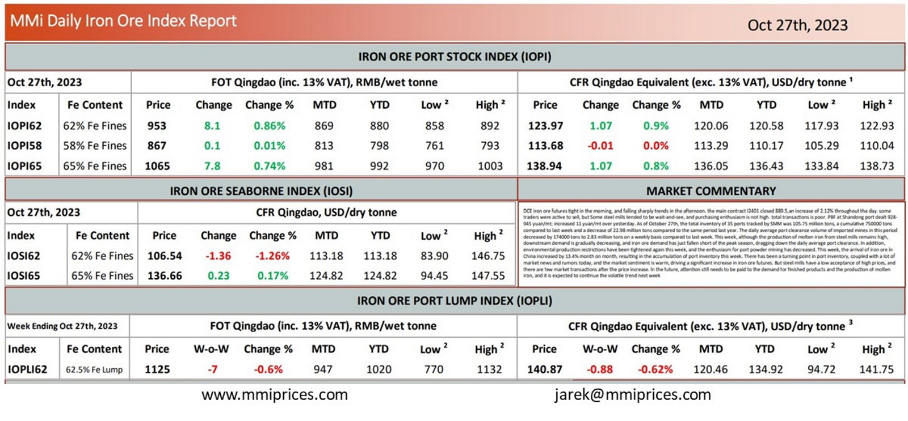

MMi Daily Iron Ore Index Report October 27 2023
in Chinese iron ore and steelmaking prices 27/10/2023

DCE iron ore futures tight in the morning, and falling sharply trends in the afternoon. the main contract I2401 closed 889.5,an increase of 2.12% throughout the day. some traders were active to sell, but Some steel mills tended to be wait-and-see, and purchasing enthusiasm is not high. total transactions is poor. PBF at Shandong port dealt 928-945 yuan/mt; increased 11 yuan/mt over yesterday. As of October 27th, the total inventory of 35 ports tracked by SMM was 105.75 million tons, a cumulative 750000 tons compared to last week and a decrease of 22.98 million tons compared to the same period last year. The daily average port clearance volume of imported mines in this period decreased by 174000 tons to 2.83 million tons on a weekly basis compared to last week. This week, although the production of molten iron from steel mills remains high, downstream demand is gradually decreasing, and iron ore demand has just fallen short of the peak season, dragging down the daily average port clearance. In addition, environmental production restrictions have been tightened again this week, and the enthusiasm for port powder mining has decreased. This week, the arrival of iron ore in China increased by 13.4% month on month, resulting in the accumulation of port inventory this week. There has been a turning point in port inventory, coupled with a lot of market news and rumors today, and the market sentiment is warm, driving a significant increase in iron ore futures. But steel mills have a low acceptance of high prices, and there are few market transactions after the price increase. In the future, aftention still needs to be paid to the demand for finished products and the production of molten iron, and it is expected to continue the volatile trend next week.

📄 Download PDF: MMi-Daily-Iron-Ore-Report-for-27th-October-2023.pdfSource: Metals Market Index (MMi)
 Translate
Translate{kind=link}